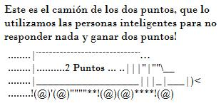

De: La Frikipedia, la enciclopedia extremadamente seria.
De: La Frikipedia, la enciclopedia extremadamente seria. De: La Frikipedia, la enciclopedia extremadamente seria.
| De la serie sitios web de ayer y de hoy: | |||
| Yajú! respuestas | |||
| |||
| Dirección: | Yajú! Respuestaz | ||
| Se dedica a: | Desinformar a las personas | ||
| País de origen: | Mercurio | ||
| Año de fundición: | 1478 | ||
| Propietario: | |||
| Creador: | El mismo de arriba | ||
| Estado actual: | Activo | ||
'Yahoo! Respuestas es una comunidad web creada por google y robada por Yahoo hace miles de años, sirve para que los usuarios puedan recurrir por ayuda y recibirla por parte de otros usuarios mediante preguntas y respuestas, al menos es lo que ellos dicen.
Yahoo! Respuestas es una herramienta que te permite aclarar tus dudas, resolver problemas, así como recurrir por idealismos diferentes de otras personas de otras partes del mundo para comprender mejor sobre un tema determinado. ¿Y que debe uno preguntar?: es simple, pregunta lo que se te ocurra o lo que te salga de tu abstracto cerebro. Puedes hacer preguntas como ¿Porque me excito tanto con mi perro? o ¿Si me corto el brazo me volverá a crecer?, y todas tus dudas que con tan solo investigar encuentras la respuesta pero que tienes flojera para buscarla por ti mismo; al fin y al cabo la pagina se usa con otros fines.
Otro detalle es que aun no se tiene especificado es sobre la exacta pronunciación del nombre de la pagina, algunos dicen "Yajuu", "Yajoo", "iajoo", lo mismo sucede con la segunda palabra; "Repoetas", "Reputas", Y así, van apareciendo un sin numero de pronunciaciones.
Sobre el significado del nombre se han propuesto varias teorías:
El termino "Yahoo" puede referirse a la expresión de felicidad cuando una persona
ha logrado algo, por ejemplo: Jimmy grita ¡¡Yahoo!! porque su madre no lo golpeará por ver revistas porno.
El termino "Respuestas" se deriva de dos palabras: "Res" que bien podría ser un animal de ganado (vaca), y "Puestas" cuyo significado de doble sentido puede ser que alguien o algo que las tiene encima de él, por lo tanto científicos importantes como Isaac Newton o (como mierda se escriba) proponen el significado "Res que esta puesta a alguien con calentura" o bien "Persona que atiende la solicitud a otra persona mediante un "Res puesto".
Algunos dicen que es Bush en un intento de conquistar el mundo (¿como? quien sabe), otros dicen que es un borracho y compañía. La verdad es que son un grupo de tipejos carentes de neuronas que copiaron la idea fallida de Google Respuestas los cuales quebraron en codicia de encontrar el tesoro perdido de la red. La diferencia es que una es gratis y la otra cobraban hasta por respirar. Y pues como Gugle respuestas o Google Answers, no tenia muchas ganas de hacer nada (Como todo el mundo) no metió demanda a la pagina Yahoo Respuestas, a cual comenzó a esparcir por la red cartelitos y anuncios como "os que vez a la izquierda de esta pagina", así poco a poco usuarios sin nada mejor que hacer fueron conociendo la pagina y haciéndose usuarios de esta.
Digamos que eres un Usuario de Yahoo! Respuestas, famoso y muy conocido, de momento, aparece otro igual que tu, diciendo ¡Soy Gay!, y así intenta darte una mala reputación, pero no te preocupes, ser Gay no es tan malo, si no pregúntale a Bush.
También de aquellos usuarios no troll o clones (También se da el caso que lo sea) que responden solo por puntos contestando con un "+2" o alguna otra respuesta mediocre y sin sentido. Definitivamente, la sección con mas (subnormalidad) usuarios en todo yaju respuestas, y eso implica un gran indice de retardados mentales intentando llamar la atención.
El término 'Yahoo Pareja, también conocido como inadaptado social, surge a finales del siglo XIX y forma parte de la ideología de la tristeza humana, aunque también tuvo defensores anteriores y posteriores que no se identificaron con esa ideología. Según la concepción inadaptada, todo acuerdo libre entre personas detrás de un monitor es un compromiso triste solitario y sin vida sexual y para ellos "legítimo" que debe ser respetado por los otros usuarios de YAHOO! , por lo tanto las ciber relaciones sentimentales o sexuales no necesitan ningún permiso o autorización expresa del Estado, ni ningún compromiso religioso.
Desde aproximadamente un año después de fundado Yahoo Respuestas, se encontraron acorde al archivo de respuestas rosca que no fueron eliminadas y al departamento de cadáveres de preguntas de Yahoo Respuestas, Le Caché (Ja!)) restos de lo que pueden ser las primeras Yahoo Parejas.
Las Yahoo Parejas, también conocidas como YP's, son los usuarios que llevan un alto nivel de frikismo, el significado mas común que se le da a estas siglas es el de Yahoo Parejas pero tambien son conocidos como Yahoo Pateticos, Yahoo Pirujos, Yahoo Putas (en el caso de algunas mujeres) o Yahoo Ponme mejor respuesta. Se les puede reconocer por usar un nick con dos nombres separados por un &, de, Y o simplemente el uso de un corazón.
El método de apareamiento y busca de parejas en éstas Yahoo Parejas es, al igual que en la vida real, variado. Varia desde el clásico "Nos encontramos por accidente en una fiesta de avatares, comenzamos a hablar, se volvió mi fan y en un cyber-plan arrunche nos declaramos el amor el uno por el otro", hasta el método más utilizado hoy, el promiscuo "Vamos a una pregunta y ahi nos hacemos yahoo-parejas con quien salga" al mejor estilo de una Cyber-Fiesta de llavecitas. La Iglesia del Hámster y las séculas moradas de Yahoo desaprueban esta última costumbre, diciendo que "Es la muestra de la decadencia y la falta de los jóvenes de hoy en día por un cyber-compromiso serio". Insisten que "Las parejas no deberían tener cyber-hijos hasta después del nivel 5", creencia que muchos jóvenes nivel 3 o 2 consideran anticuada.
Yahoosociólogo de la sección de Amigos y Relaciones

|
Anteriormente las Yahoo!Parejas eran cosa seria. Si eras hombre, tenías que visitar la sección que frecuentaba tu novia, conocer a su cyber-familia, y cuidar entre los dos el muro de su Yahoo!360. Eran tiempos en los que de veras se relacionaban por sentimiento, y hasta se conocían en persona. Además tenías que sorprenderla ocasionalmente con un avatar romántico o 10 puntos sorpresa para ganarles su corazón. Las mejores cyber-amigas discutían entre ellas cuán simpático era el Colaborador Destacado de la sección, y los cyber-amigos se peleaban por las chicas populares de Encuestas y Sondeos." Se nota que tenían bastante pasión por lo que hacían virtualmente. Tolomeo sostiene que "Ahora las Yahoo!Parejas ni se conocen el uno al otro (Que acaso se conocían en persona antes o qué?), y ya no tienen compromisos porque el Yahoo!360 se acabó y el Yahoo!Pulse es una mierda. Las Chicas utilizan métodos Yahooabortivos más seguido y cambian de Yahoo!Novio cada semana. Que se han vuelto Pútah, claro que si. Antes también les gustaba el Cyber-Sexo, pero ppor lo menos tenían pudor. Qué carajos pasa con el Yahoo de hoy en día?" |

|
| Reglas iniciales de Yahoo!Parejas |
|
|
Para YvonncitaTierna&Zydar♥SuperKyut!, usuaria de yahoo del Nivel 3, "los tiempos cambian! aora hay mas ninios lindos en las pregus y tan lindos y buenotes juju! io creo que me gusta m stilo de vida, principalmente xq tienes comiendo de tu mano a todos los ninios y ahora es solo escoger kual kieres mas cada 2 semanitas! io los amo a todos y ay espasio en mi kora para todos ellos ^^ special para zydar papaxote q lo amuuu♥♥♥♥♥ y ps si mis amiguis les gusta, xq a mi no??? hihihi :P dame 10 pts plz!" |
|
| Alguna Yahoo!Pareja en su hábitar natural |
Hay diferentes tipos de preguntas en las que los usuarios de Yahoo!Respuestas realizan continuamente dia a dia en la comunidad, las cuales se resumen a los siguientes tipos:
Lamentablemente este tipo de preguntas las hacen aquellos Perezosos que prefieren preguntar a investigar por si mismos, aunque hay que darles la razón (Hoy en dia ¿A quien demonios le gusta trabajar?). Pero bueno, si no fuera por esa Pereza] Yahoo Respuestas no existiria, ya que para eso se inventó, para que la gente perezosa siga haciendose todavia más perezosa.
Y asi podemos encontrar muchas preguntas sin logica con los cuales mucha gente pierde su tiempo.
En una pregunta desperdician 5 puntos, para realizar una cantidad absurda de preguntas algunos llegan a exagerar y postean hasta 30 preguntas en una sola.
Son aquellas preguntas que proponen un metodo en la que usuarios pueden conversar de manera de un juego en una pregunta con otros usuarios. Este tipo de preguntas se subdivide en:
Casi la mayoria de estas preguntas no preguntan, mas bien son un medio para hablar una opinion sobre una cosa y pocas veces preguntan algo.
Insultar está prohibido segun las ni siquiera al gobierno se la puedes insultar(Y eso es una decepción).
El propósito de Yahoo! Respuestas no es el de jugar o competir, se trata de compartir conocimiendo con otros usuarios de Yahoo! alrededor del mundo, y por esta razón las preguntas de juego o por puntos no se permiten.
Algunos ejemplos de lo que consideramos chatear:
¿Cómo están?, ¿Qué edad tienen?, ¿Qué tal el día?, etc.
¿Qué están (haciendo/pensando)?, ¿Qué llevan puesto?, etc.
Adivinen… /A ver si adivinan cómo…/ ¿Cómo se llaman?, ¿Chico o chica?, ¿Cuánto pesan?, ¿Cuándo es tu cumpleaños?, ¿Dónde vives?, etc.
¿Alguien es de...?/¿Quién juega... aquí? /¿Alguien quiere chatear?
A dónde se fue nick del usuario?
Cualquier tipo de juegos de avatar y juegos de cualquier tipo.
También consideramos chatear a las preguntas que se refieren a otros usuarios por sus nombres. Si tu intención es aclarar dudas sobre una pregunta de otro usuario y esa persona no está disponible por correo electrónico o mensajería instantánea, puedes publicar una nueva pregunta que esté abierta para que cualquier usuario de la comunidad pueda responderla, quizá algún otro miembro esté mejor preparado para contestarla.
Por ejemplo; ¿Se puede entrar por afuera?, y asi, si deseas ver mas preguntas de este tipo.
Por ejemplo: ¿A qué hora juega hoy españa? ¿Quién ha ganado las elecciones? ¿Se ha ido lopera ya del betis?
Esta es una muestra de cómo en Yahoo Respuestas te pueden ayudar:
| La pregunta | Tipo de respuesta | Y su respuesta |
|---|---|---|
| ¿Que es V.I.H? Mi ex-novio me dijo que tenía vih pero no se que significa eso. Nosotros tubimos relaciones sin condón ¿Habra algún problema? | El que sabe aconsejarte. | Busca en Google. |
| ¿Que es V.I.H? Mi ex-novio me dijo que tenía vih pero no se que significa eso. Nosotros tubimos relaciones sin condón ¿Habra algún problema? | El +2 | +2 |
| ¿Que es V.I.H? Mi ex-novio me dijo que tenía vih pero no se que significa eso. Nosotros tubimos relaciones sin condón ¿Habra algún problema? | El camión de los 2 puntos. |  |
| ¿Que es V.I.H? Mi ex-novio me dijo que tenía vih pero no se que significa eso. Nosotros tubimos relaciones sin condón ¿Habra algún problema? | El wikipédico. | Sida (sección Diferencia entre infección por VIH y padecimiento del sida) El sida o SIDA (acrónimo de síndrome de inmunodeficiencia adquirida), también abreviada como VIH-sida o VIH/sida. El sida comienza con "S" y termina con "A", es una enfermedad que (...) |
| ¿Que es V.I.H? Mi ex-novio me dijo que tenía vih pero no se que significa eso. Nosotros tubimos relaciones sin condón ¿Habra algún problema? | El que deberas sabe. | Es la avrebiasion de un reproductor de peliculas, parecidas a los casetes y se usaban antes que los devedés, pero estos eran mejores porqe se podian gravar pelis desde la tele. Salu2 |
| ¿Que es V.I.H? Mi ex-novio me dijo que tenía vih pero no se que significa eso. Nosotros tubimos relaciones sin condón ¿Habra algún problema? | El sincero. | La cagaste. |
| ¿Que es V.I.H? Mi ex-novio me dijo que tenía vih pero no se que significa eso. Nosotros tubimos relaciones sin condón ¿Habra algún problema? | El que está mas necesitado que tú. | Me respondes mi pregunta? →http:/www.answers... |
| ¿Que es V.I.H? Mi ex-novio me dijo que tenía vih pero no se que significa eso. Nosotros tubimos relaciones sin condón ¿Habra algún problema? | El artista de Ascii art | |
| ¿Que es V.I.H? Mi ex-novio me dijo que tenía vih pero no se que significa eso. Nosotros tubimos relaciones sin condón ¿Habra algún problema? | El viaje a las estrellas facepalmista. | |
| ¿Que es V.I.H? Mi ex-novio me dijo que tenía vih pero no se que significa eso. Nosotros tubimos relaciones sin condón ¿Habra algún problema? | El fumado... | o.o.o.o.o.O.o.o.0.o.O.o.0.o.o.O.o.o.o.o.0.0.o.o.O.o |
| ¿Que es V.I.H? Mi ex-novio me dijo que tenía vih pero no se que significa eso. Nosotros tubimos relaciones sin condón ¿Habra algún problema? | El Troll | Aquí puedes hallar toda la informacion que necesites: http://www.youtube.com/watch?v=6GggY4TEYbk |
| ¿Que es V.I.H? Mi ex-novio me dijo que tenía vih pero no se que significa eso. Nosotros tubimos relaciones sin condón ¿Habra algún problema? | Y el que finalmente, te dice la verdad. | Tu pregunta no debe estar en esta sección, debes hacerla en educación sexual y ésta es la sección de computadoras por lo que aquí nadie sabe sobre sexo. Pero suerte con tu novio y sus videos VSH. |

Son los 10 mandamientos que debes seguir para que tu cuenta en YR no sea eliminada por los señores feudales y la Rata Yahoo.
Los usuarios de Yahoo! tampoco se escapan, este es un pequeño vistazo al tipo de preguntas que dia con dia son realizadas en la pagina:
| |
|---|
| 4chan • Anarcopedia • Argim.net • Asco de vida • Cleverbot • Cuánto Cabrón • Desmotiva2 • Desmotivaciones • EBay • EBuddy • Encyclopædia Dramatica • Facebook • Forocoches • Gamil • Gatitas Pop • Google Groups • GTAChile • Habbo Hotel • Hispachan • Hotel626 • Identi • IMDb • Inciclopedia • Instagram • La Súper Cafetera • Last.FM • Locüendo • Man red • Maristation • Media-Vida • Megaupload • Menéame • Metroflog • MySpace • Poringa! • Que pasa • Red social • RedTube • Rule 34 • Taringa! • Traductor Google • Tuenti • Tumblr • Twitter • U.N Cuyo • Uncyclopedia • Vagos.es • Vota mi cuerpo • What Da Faq • Wikia • Wikileaks • Wikipedia • Wikipediars • Windows Update • Xvideos • Yahoo • YouTube • |
Autor(es):